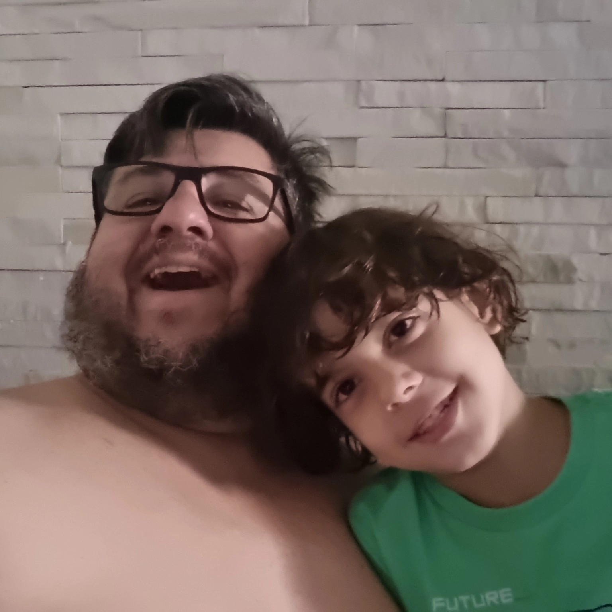

Mais inclusão, mais respeito.
O Cristian Pelo Autismo nasce da vivência de Cristian Marcelo Schibelsky como pai do Lucas e da atuação técnica em políticas públicas voltadas ao TEA, à pessoa com deficiência e às famílias atípicas.


SOBRE CRISTIAN
História, vivência e compromisso.
Acessar
LEIS E DIREITOS
Leis, benefícios e caminhos.
Acessar
PALESTRAS E AÇÕES
Conscientização, escolas e instituições.
Acessar
CAMPANHA DE APOIO
Declare apoio e fortaleça a rede.
Acessar
CONTATO
WhatsApp, Instagram e e-mail.
Acessar
Vivência, causa e compromisso público.
Cristian Marcelo Schibelsky é pai atípico, comunicador, gestor público e idealizador do projeto Cristian Pelo Autismo. Sua trajetória une experiência familiar, atuação social e conhecimento técnico na defesa de direitos.
Entre 2017 e 2023, atuou em assessoria técnica parlamentar, contribuindo na construção e acompanhamento de propostas voltadas à pessoa com deficiência, ao autismo, à acessibilidade, à inclusão escolar e à dignidade das famílias.
Tudo começou por ele.
Lucas é a inspiração que dá sentido a esta caminhada. A vivência como pai atípico transformou a forma de Cristian enxergar o mundo e reforçou sua missão: levar informação simples, acolhimento e orientação para que nenhuma família se sinta sozinha.
O projeto não fala apenas sobre autismo. Ele fala sobre respeito, cuidado, direito, dignidade e pertencimento.
Apoiar essa causa
Levar informação também é promover inclusão.
Cristian atua em palestras, encontros e ações de conscientização para aproximar famílias, educadores, instituições e comunidades do tema do autismo e dos direitos das pessoas com deficiência.
Temas possíveis
Autismo e família atípica, inclusão escolar, direitos e benefícios, atendimento humanizado, políticas públicas e conscientização social.
Formato
Palestras, rodas de conversa, encontros com famílias, ações públicas e eventos de conscientização.

Fale com o projeto.
Canal direto para palestras, orientações iniciais, agenda de ações, apoio à causa e contato institucional.